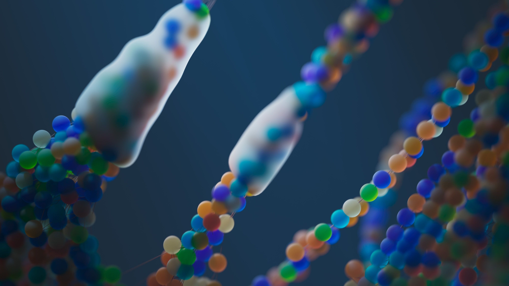
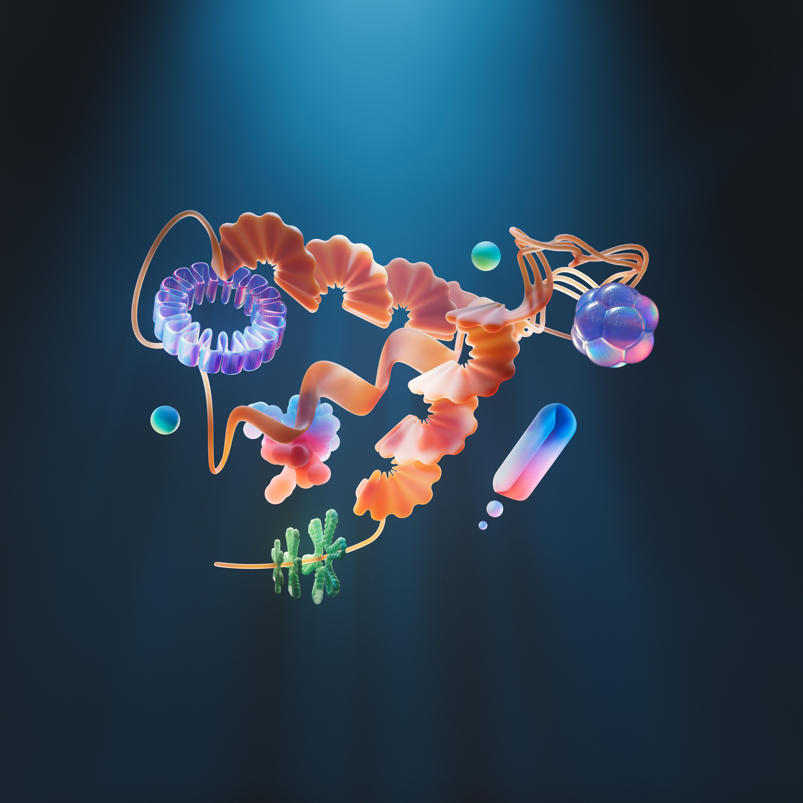
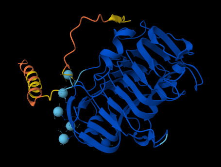

M1
TOO MANY TOOLS
Workflows split across disconnected interfaces and data formats.
Geneode brings sequence analysis, scientific databases, AI interpretation, visualization, and publication-ready reporting into one integrated research environment.
AI assists scientific work. Researchers remain responsible for scientific reasoning.
Researchers repeatedly switch between tools like BLAST, NCBI, UniProt, KEGG, PDB, Ensembl, Primer3, and literature databases. This context switching consumes time, increases cognitive load, and creates avoidable points of error.
Workflows split across disconnected interfaces and data formats.
Manual transfer steps reduce focus on scientific interpretation.
Beginners face steep barriers before meaningful analysis begins.

Upload biological sequences and run computational analysis with guided controls.

Pull structured annotations, pathways, structures, and references from core resources.

Receive context-aware explanations that support, not replace, scientific judgment.
Understand outputs through pathway, structure, and sequence-focused views.
Convert analysis outcomes into publication-ready summaries and exports.
Stay in one environment from upload to interpretation and final delivery.
Upload biological sequence data in standard formats
Run computational analysis with configured parameters
Retrieve multi-source annotations from trusted databases
Interpret findings with AI-assisted contextual analysis
Visualize biological context across multiple views
Export publication-ready summaries and reports
1.2M+ records
Reference sequence and gene records
98.7% uptime
Similarity search and alignment matching
570K+ curated
Protein function and curated annotation
550+ pathways
Pathways and systems-level context
214K+ structures
Protein structure insights and references
300+ species
Genome annotation across organisms
200M+ predicted
Predicted structure context where relevant
Design engine
Primer design support in workflow
47K+ terms
Functional terms and biological processes

Core sequence analysis workflows and foundational database integrations. BLAST, NCBI, UniProt connectivity established.
Expanded annotation capabilities, advanced multi-view visualization, and publication-ready reporting engine.
CRISPR design tools, synthetic biology workflows, voice AI interface, autonomous agents, and LIMS connectivity.
Geneode is being shaped as the public face of a serious scientific platform: technically grounded, transparent by design, and built for researchers, educators, labs, and biotechnology teams. Every product decision is aimed at reducing repetitive computational work so scientists can focus on discovery.
Join the next phase of AI-assisted bioinformatics development.